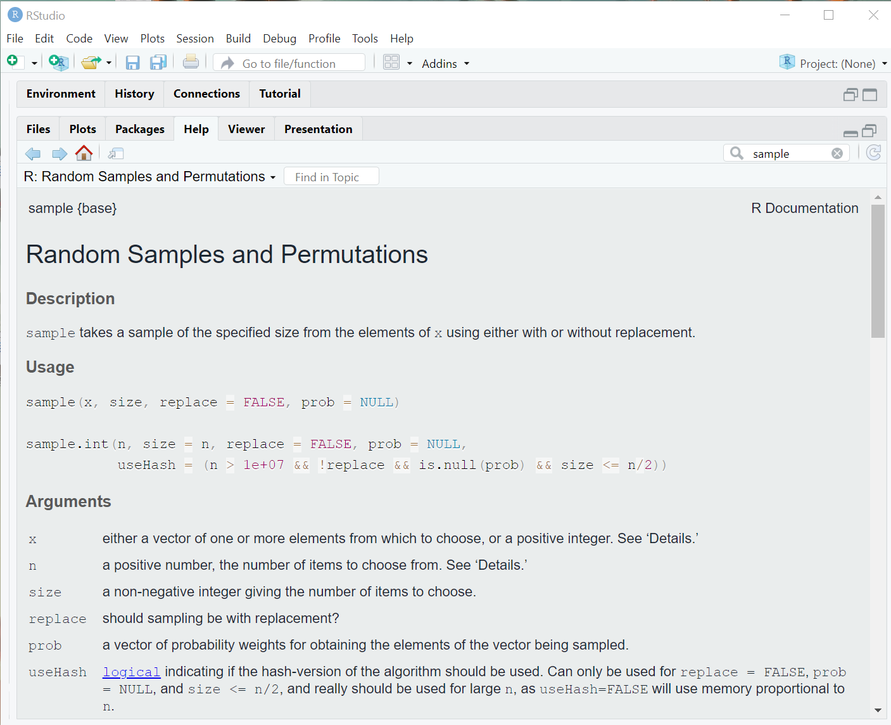
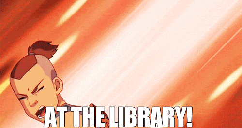

function_name(arg1, arg2, arg3)Special Lesson 6: R Functions & R Help
Learning Goals
At the end of this lesson, you should:
- Understand how to call functions using named and positional arguments
- Be able to access help files for an R function and know how to use the information provided in a help file
The Mechanics of R Functions
We have thus far used a few R functions without explicitly stating how to call them properly.
The majority of functions in R follow this format:
Where “arg” refers to a function argument (that is, a piece of information the function can use).
A function has a name, and can take several arguments within the parentheses. These argument values can be provided by providing each argument in the expected order:
function_name(value1, value2, value3)Note that each positional argument is not being explicitly referenced. However, we can specify each argument when calling a function:
function_name(arg1 = value1, arg2 = value2, arg3 = value3)When specifying the argument explicitly, we don’t have to follow the order of arguments:
function_name(arg1 = value1, arg3 = value3, arg2 = value3)This approach of using named arguments is very helpful when there is a very long list of potential argument and you only plan to specify a small portion of them.
We can also combined positional argument and named arguments:
function_name(value1, arg3 = value3)In this case, arg2 has been completed omitted. When an argument is not specified, that implies the default arguments for that function will be used instead. In order to find out the default argument values for a function, we need to consult the R help files.
Using R Help
You can search for a function directly using the search windows in the upper right of the “Help” pane.
You can also search using this notation: ?function_name.
Let’s check out the help file for sample(), a function designed to randomly sample items and return that random sample to us.
?sampleHere is a screenshot of the window that hopefully popped up in your RStudio help pane:
knitr::include_graphics(here::here("images", "help_sample_ex.png"))
All help files follow this format
- Description what the function does
- Usage how the function is called; this is where default argument may be listed
- Argument the named arguments available in the function (often the most useful part of the help file)
- Details an optional section providing various computational details
- Value what is returned after the function is run
- References any technical, scientific or peer-reviewed lit references supporting the computational procedures implemented in the function
- See Also similar functions (usually not very useful)
- Examples actual examples of the function in the wild! These are hit-or-miss on their overall utility, but when I’m desperate to understand how to properly call a function, this has helped me.
At the very bottom is the package the function came from and a link to an index of all functions associated with that package. This can come in handy when you want to browse all functions available in a package.
Looking at the sample() help file, here is what is it telling us:
- The first argument is a vector of choices for the function to sample randomly
- The next argument is the number to sample. By default, it will return a sample the same length at the input vector of choices
- The third argument indicates that if a vector should be sampled with replacement (that is, can items be repeatedly sampled). The default is FALSE (meaning no).
- We can also specify the probability of sampling any item in the input vector. If we don’t provide this information, then all item is assumed to have equal probabilities of being sampled.
- It will return a vector of the item sampled
x <- 1:100
x [1] 1 2 3 4 5 6 7 8 9 10 11 12 13 14 15 16 17 18
[19] 19 20 21 22 23 24 25 26 27 28 29 30 31 32 33 34 35 36
[37] 37 38 39 40 41 42 43 44 45 46 47 48 49 50 51 52 53 54
[55] 55 56 57 58 59 60 61 62 63 64 65 66 67 68 69 70 71 72
[73] 73 74 75 76 77 78 79 80 81 82 83 84 85 86 87 88 89 90
[91] 91 92 93 94 95 96 97 98 99 100sample(x, 10, replace = TRUE) [1] 42 68 4 91 71 25 64 74 1 45
Note
It is normal to struggle with R code. Newer users of R struggle more than seasoned users, but we all end up experiencing an apparently intractable problem, one that we cannot solve despite our best efforts. The first response may be to Google that problem (which may yield helpful information), but there are also more efficient search strategies you can employ to solve your R coding problem. Here is a blog post addressing that very topic: how to find help when we are stuck.
Back to functions
Functions can return exactly one object (or none at all). If it does return an object, that can be assigned to a new object:
new <- function_name(value1, arg3 = value3)If the output from a function is not assigned, it will be sent to the console instead (we’ve done this plenty during this workshop). Sometimes, this is fine! Maybe it is a small amount of output we are running to check data integrity. Or maybe it’s a giant data frame we deeply regret printing in the console.
Base R and Contributed Libraries
This is the last section with a major focus on ‘base R’, that is the set of functions that come automatically loaded when you install and open R.
Take a look at this long-ish cheat sheet (4 pages long!) of the many useful commands in base R. Skim through this and see if there is anything useful for you. It is meant to periodically skimmed, not studied in great detail (you’ll put yourself to sleep if you try to read it beginning to end).
Additionally, here is the ultimate guide to working with the R language. This is a long, highly technical document, but it is also incredibly detailed and informative. Reading this is like reading an encyclopedia - only read a a small section at a time. I do not recommend reading this beginning to end.
Libraries
knitr::include_graphics(here::here("images", "sokka_library.gif"))
But also, the community keeps R humming and current by writing packages that extend R’s functionality. This is both awesome (the latest greatest tool is now enabled!) and bad (quality of implementation is not guaranteed and these packages are often not maintained over the long haul).
These packages are often made available on CRAN, the comprehensive R archive network, as well Bioconductor or via GitHub, GitLab, independent websites.
You can access packages on CRAN by first installing them with install.packages("package_name") and then loading the package into an R session, library(package_name). Here’s an example using readr and *readxl**, packages we will use for data importation.
install.packages(c("readr", "readxl"))
library(readr)
library(readxl)Note that multiple packages can be listed in the install.packages() command, but not library(). Also, packages only need to be installed once, not repeatedly (unless a package needs to be a updated to the latest version). However, packages must be loaded in every R session or their functionality (including the help files) is not available.
Putting it all together
When you search for something in the Help pane, several types of help files will result: vignettes and function documentation. Function documentation is what we have just reviewed (detailed information on how to use a function). Vignettes are examples of how to use a collection of function in a package. They provide more context and a programmatic flow for using a package or accomplishing a particular goal. They are package tutorials. Vignettes are not provided for every function or every package; they are an extra feature that package authors choose to create for users.
There is an enormous number of R packages available! There are a few options for finding packages relevant to your work: * CRAN Task Views * Bioconductor Workflows